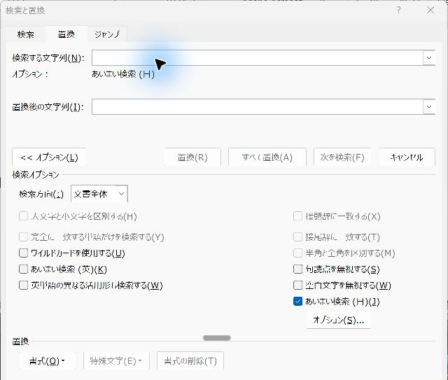

Wordの「置換」でVBAなしに一括整形する（特殊文字）
社名の表記、余分な空行、手動改行などを、Wordの「置換」でまとめて直します。まず1件だけ試してから一括で直します。
結論
Ctrl＋Hで、まず1件だけ置換して結果を確かめます。問題がなければ一括で置換します。作業前に必ずコピーを保存します。
やさしい（Lv.2）
- コピーを保存
- 通常の置換
- 特殊文字で整形
- 結果を照合
目次
この記事で扱うこと
同じ文字の修正や余分な空行の整理を、Wordの「置換」で行います。フィールドコードは不要です。
準備：コピーを作り、変更前を残す
- 元の文書を開き、「ファイル」→「名前を付けて保存」で「整形作業用」などの名前のコピーを作ります。
- まずは短い段落を選んで試します。表やタブ区切りデータと普通の文章は分けて扱います。
- ホームタブの「編集記号の表示/非表示」で、段落記号やタブを見えるようにします。確認しやすくなります。
手順1普通の文字を1件だけ置き換える
- Ctrl＋Hを押して「検索と置換」の「置換」タブを開きます。
- 「検索する文字列」へ、例として「株式会社サンプル」を入力します。
- 「置換後の文字列」へ「サンプル株式会社」を入力します。
- 「オプション」を開き、「ワイルドカードを使用する」がオフであることを確認します。前の検索の条件や書式が残っていれば解除します。
- 「次を検索」で該当箇所を確認し、「置換」で1件だけ直します。
確認結果が正しいと分かってから、文書全体に同じ変更が必要な場合だけ「すべて置換」を使います。

手順2空行を減らす（通常の検索）
ワイルドカードをオフにして使います。空行もレイアウトの一部の場合があるので、まず1件ずつ確認します。
| 目的 | 検索する文字列 | 置換後の文字列 |
|---|---|---|
| 連続した段落区切りを1つにする | ^p^p | ^p |
| 手動改行を段落区切りにする | ^l | ^p |
- 検索欄へ「^p^p」、置換欄へ「^p」を入力します。
- 「次を検索」で空行に一致しているか確認します。
- 「置換」で1か所直し、前後の段落が意図どおりか見ます。
- 複数の空行がある場合は、必要な回数だけ繰り返します。段落の間隔設定で空いている場所は、この置換では変わりません。
連続タブは一律に減らしませんタブ区切りデータでは「A［タブ］［タブ］C」が、A・空欄・Cの3列を表す場合があります。タブを1つにするとCが2列目へ移ります。Excelに貼る予定の表では、空欄の列を保ったまま確認します。
手順3全角・半角は必要な文字だけ選ぶ
- 変換したい文字列を選びます。文章全体ではなく、番号や英数字だけで試します。
- 「ホーム」→「文字種の変換」（Aaのメニュー）→「半角」または「全角」を選びます。
- 句読点・カナ・英字まで意図せず変わっていないか確認します。
- 番号の意味をそろえたり日付を計算したりする場合は、Excelへ貼り付けた後に値を整えます。
最後に：結果を確認して保存する
変更後の件数と、文書の先頭・途中・最後を確認します。置換の結果は Ctrl＋Z で取り消せますが、文書を閉じると取り消しの履歴は消えます。作業前のコピーを必ず残してください。
実機で確認した内容
- 確認日：2026-11-03
- 環境：Windows版 Word 16.0
- 確認した範囲：「株式会社サンプル」は「サンプル株式会社」になる。^l は段落区切りになる。^p^p の「すべて置換」1回で3連続の空行は1つ残る。
- 確認していないこと：大きな文書、表を含む文書。環境により結果が異なる場合があります。
更新履歴
- 2026-11-03：範囲を特殊文字に絞り、ワイルドカードを応用記事へ分離。